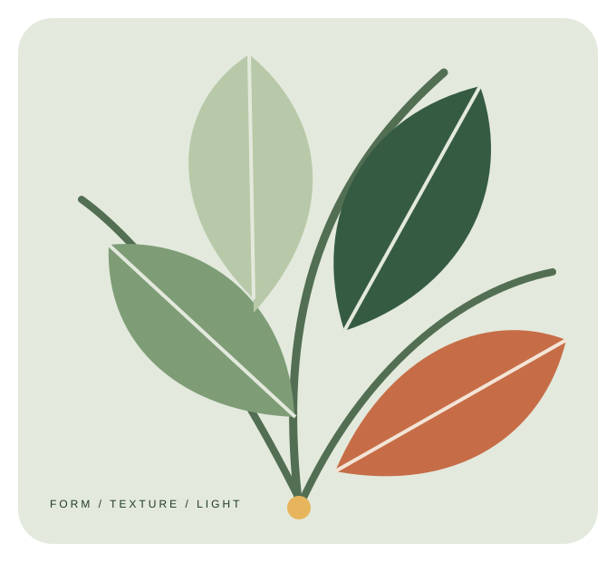

01◯
STRUCTURE / CANOPY
Shade anchor
A carefully placed canopy element can cool a sitting area, frame a view and give the garden a sense of scale.
HEIGHT + SHADE MOSS / LINEGARDEN STUDIO
MOSS / LINEGARDEN STUDIO03 / PLANT LIBRARY
A planting scheme is a composition of roles: shade, structure, movement, colour and ground cover. Explore the design jobs a plant can do.

FILTER THE ROLES
These are illustrative planting roles, not a verified species list. Final plant selection must be checked for local availability, mature size, toxicity, invasiveness and site suitability.
STRUCTURE / CANOPY
A carefully placed canopy element can cool a sitting area, frame a view and give the garden a sense of scale.
HEIGHT + SHADESTRUCTURE / SCREEN
Layered screening can create privacy without turning every edge into a hard wall.
PRIVACY + DEPTHTEXTURE / MOVEMENT
Fine leaves and upright forms catch changing light and bring movement to still spaces.
MOTION + CONTRASTCOLOUR / ACCENT
Small, deliberate moments of colour can guide the eye and give a planting scheme its rhythm.
COLOUR + FOCUSGROUND / COVER
Ground-cover planting can soften edges, reduce exposed soil and connect larger planting groups.
SOIL COVER + FLOWTEXTURE / FOLIAGE
Contrasting leaf sizes, finishes and tones create interest even when flowers are not in season.
FORM + DETAILShowing all six planting roles.
THE SELECTION CHECK